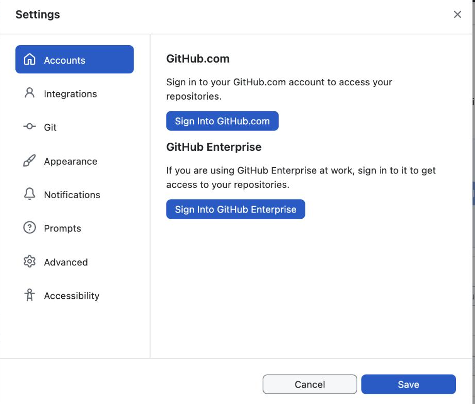
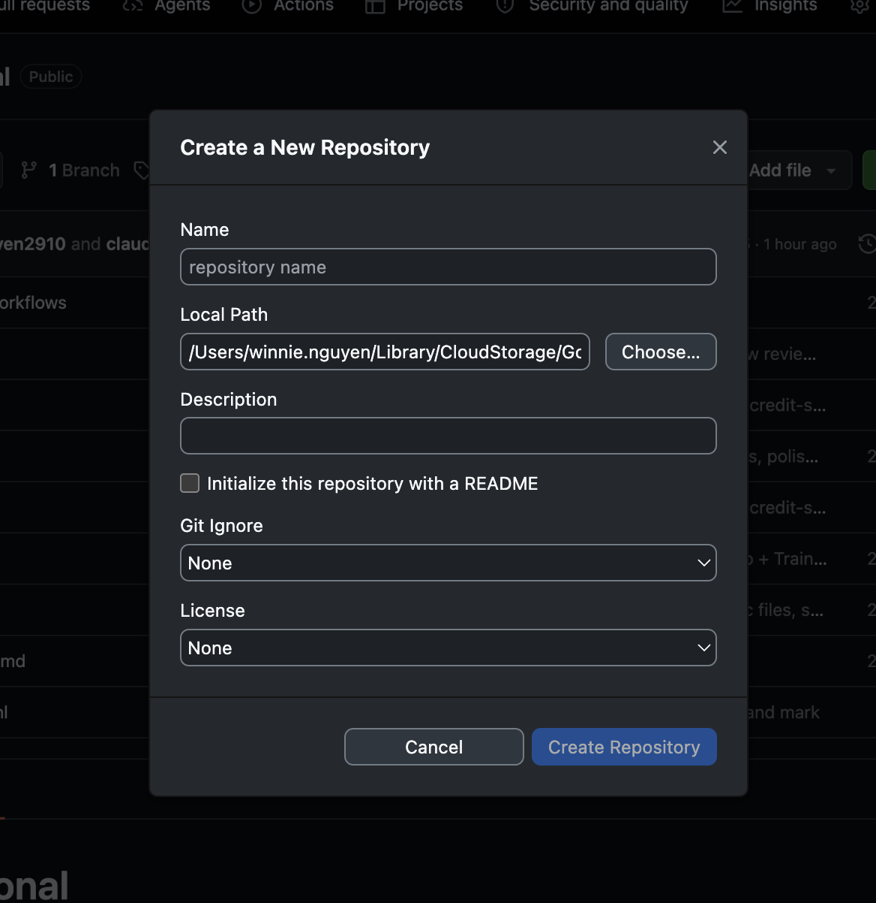
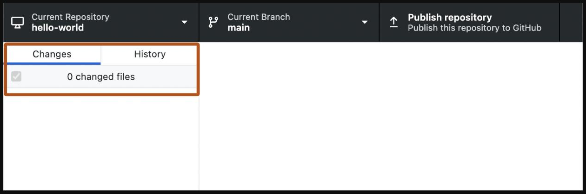

SYSTEMATIC AI PROTOTYPING
LESSON 4
Publish It
Git and GitHub Desktop for non-technical designers.
Winnie Nguyen
UX Product Design Instructor

One hundred minutes
Local becomes
live.
0110 min
Local vs. Published
0210 min
Setup & Connect
0320 min
First Publish
0415 min
Make It Live
0525 min
Try Ideas Safely
0610 min
The AI-Tool Shortcut
The mental model
Local folder = draft.
GitHub = published.
folder
arrow_forward
Local folder
A draft only you can see
history
public
GitHub
Commit history + a live URL
Ten words, defined our way
The words you'll hear today.
RepoThe project's home on GitHub, with all its files and history
CloneDownload a copy of a project from GitHub to your laptop
CommitA saved snapshot, with a short note describing what changed
PushSending your commits up to GitHub
PullBringing the latest changes from GitHub down to your laptop
BranchYour own copy of the project to try changes in, without touching the original
MainThe official version, and your live site. Never edit it directly
Pull requestAsking for a review of your branch before it joins main. Alone, you review it yourself (GitLab: Merge Request)
MergeAdding your approved changes into main
ClashTwo copies changed the same thing, so you choose which version to keep
Step 1
Connect GitHub Desktop
to your project.
1
Open GitHub Desktop, confirm signed in

2
Create a new Repo

3
Point it at the existing project folder

Before every commit
Preview it first,
then publish.
What is localhost?
A private preview that only opens on your own computer. Nobody else can see it yet.
Use this every time
Before you commit, so you only publish work you have clicked through.
Step 2
Open it,
then commit.
1Open GitHub Desktop
Use this to check the right repo is selected before touching anything.
2Write a message, commit
Use this every time you save a change, before it can be pushed anywhere.
Step 2, continued
Publish,
then push.
3Click Publish repository
Use this the first time — the repo doesn't exist on GitHub yet.
4Push origin sends it up
Use this every time after — the repo already exists, this sends new commits.
Everything shows as new or added — there's no prior commit to compare against yet.
Step 3 — the payoff
Find Pages,
then pick a branch.
1Repo Settings → Pages
Use this to open the repo's settings, where the Pages config lives.
2Open the branch dropdown
Use this the first time — it defaults to None until a branch is chosen.
Step 3, continued — the payoff
Pick a folder,
then visit the site.
3Select branch, folder, Save
Use this to tell Pages which branch and folder hold the stitched index.html.
4Wait for the build, visit the URL
Use this once it says "Your site is live" — confirms the deploy and gives the shareable link.
Why branches matter, even alone
Right now every push
goes straight to your live site.
You push your branch to GitHub. Your live site, main, stays untouched.
On another laptop, pull to bring it down. Nothing syncs by itself.
On another laptop, pull to bring it down. Nothing syncs by itself.
Try the idea on a branch. Only what you merge reaches main.
Step 1: branch
Make a branch,
then work on it.
1New branch
In GitHub Desktop: Current Branch → New Branch
Name it for the idea, like
try/new-nav2Change and commit
Make the change, preview it with localhost
Commit with a note on what changed and why
3Publish branch
Click Publish branch
Your live site, main, stays untouched
Never work directly on main. It is your live site.
The loop you'll repeat
Pull. Branch. Commit.
Push. Pull request. Merge.
1Pull
Check GitHub for new changes before you start, especially if you use two laptops or your AI tool pushes for you.
2Branch
Make a new branch for each idea, like
tokens/update-spacing. A branch is your own copy to try things in.3Commit
Save it with one clear note on what changed and why.
4Push the branch
Publish branch sends your copy to GitHub and leaves main alone.
5Pull request
Open it on your own repo and read the changes as if someone else wrote them.
6Merge, then pull
Merge into main and your live site updates. Pull, then start your next branch.
Your one-page rulebook
Your rules
ship with the repo.
CONTRIBUTING.md
Never work directly on main. One branch per idea
Pull before you start each session
Branch names
area/short-descriptionCommit notes say what changed and why
Pull requests & staying safe
Every pull request has a short summary, a screenshot if the UI changed, and which tokens or components you touched
Read your own changes before you merge
Something broke? Delete the branch. Main is untouched
Public repo: never add passwords, keys or
.env filesOnce per project
Set up the first push
through your AI tool.
Swap in your own folder name and repo URL, and create the empty repo first.
The same habit, pointed at GitHub
Publish through
your AI tool.
Beyond commit and push
Six more things
to ask for.
Get the latest
"Check if GitHub has anything new for this project, and bring it into my folder."
Start a new branch
"Create a new branch called tokens/update-spacing and switch to it. Don't touch main."
See what changed
"Show me what I've changed since my last commit, in plain language."
Open a pull request
"Open a pull request for this branch. Write a short summary of what changed and why."
Set up on another laptop
"Clone https://github.com/<username>/<repo>.git into a new folder and tell me what's in it."
Go back one step
"Undo my last commit but keep my changes, so I can edit them again."
Homework
Three things
before next time.
1Start a new repo
Pick a project that is not on GitHub yet
Preview it with localhost, then create the repo and commit
Publish it for the first time on your own, then turn on Pages
Done when: the project has its own live URL
2Write your project's rules
Copy the
CONTRIBUTING.md templateFill in branch names and how you write commit notes
Save it in your project and push it, so you and your AI tool follow the same rules
Done when: the file is on GitHub
3Practice the loop solo
Make a new branch
Commit one tiny change and publish the branch
Open a pull request on your own repo, review it yourself, then merge it
Done when: your pull request is merged
Lesson 4: arc complete
What You've Got.
✓Project connected to a real GitHub repo
✓At least two commits pushed, one of them unaided
✓A live, self-updating URL
✓A pull request merged into your own repo
Exit ticket — publish one more thing on your own this week.
Winnie Nguyen